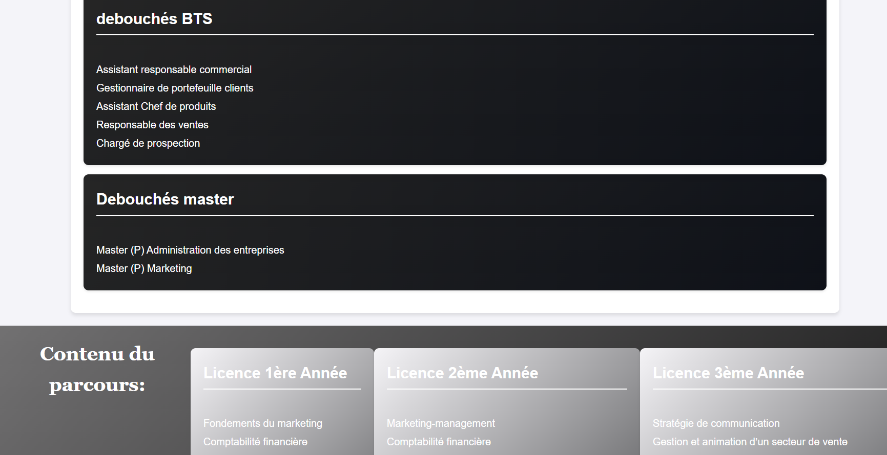

Pigier Côte d'Ivoire
Site Institutionnel Pigier
Refonte visuelle et structuration du site de l'établissement. Travail sur l'expérience utilisateur et la présentation des formations.
HTMLCSSJavaScript